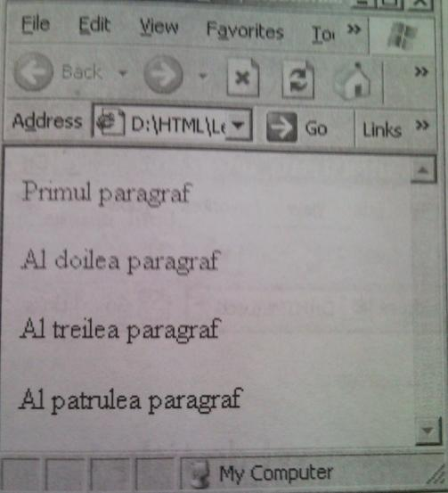
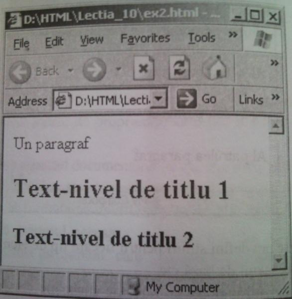
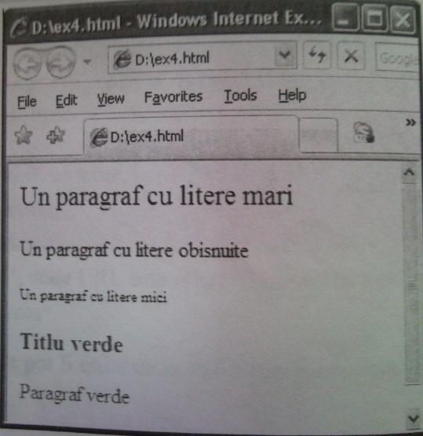
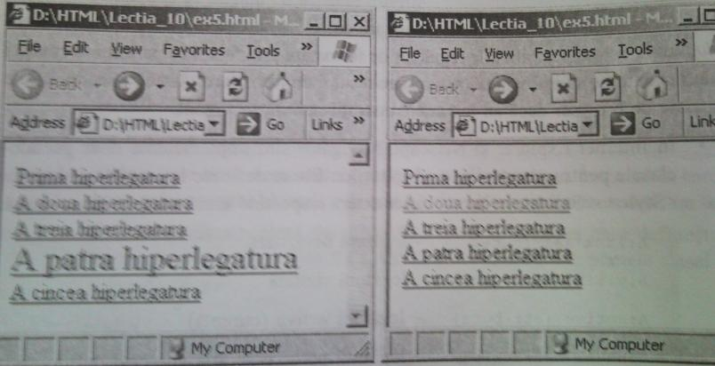

Stiluri. Clase. Pseudoclase.
Modalităţi de utilizare
10.1. Stiluri
Stilurile se folosesc pentru a crea diferite efecte de aspect pentru document. Prin stil se subînţelege un ansamblu de proprietăţi, care pot fi atribuite unui fragment de document,
Pînă acum modificam aspectul documentului cu ajutorul etichetei <Font> şi a atributelor etichetelor <P>, <Body> <Hn> etc. Această modalitate nu este foarte comodă, deoarece ori de cîte ori se doreşte formatarea unui text trebuie să definim din nou toate caracte- risticele care formează aspectul necesar,
Foia de stiluri reprezintă un „şablon” care „dirijează” cu aspectul elementelor HTML. Aşa cum într-un document se pot utiliza mai multe foi de stiluri şi browser-ul creează o „ordine” (numită cascadă) pentru a le interpreta, în uz a fost introdus termenul Foi de stiluri în cascadă (CSS - Cascading Style Sheet).
Foile de stiluri în cascadă pot fi utilizate în cîteva moduri fundamentale:
- Inline;
- înglobat;
- Extern (sau legat);
- Importat.
Folosirea inline a stilurilor se realizează cu ajutorul atributului STYLE, care poate fi scris în interiorul majorităţii etichetelor.
Exemplul 1
<HTML>
<Bcdy>
<P Style="color: red"> Primul paragraf
<P Style="color: green"> Al doilea paragraf
<P Style="color: blue"> Al treilea paragraf
<P Style="color: black"> Al patrulea paragraf
<Body>
<HTML>

Prin acest mod se pot defini stiluri pentru fiecare tip de element al documentului: paragraf, nivel de titlu, textul de bază etc.
Pentru definirea unui stil înglobat se folosesc etichetele <StyIe>, </Style>, care se scriu, de regulă,
în blocul <Head> </Head>.
• Eticheta <STYLE > are atributul obligator TYPE = "text/css".
Definirea stilului respectă sintaxa:
El{atribute}
E2{atribute}...
unde E1, E2,... sînt tipuri de elemente ale documentului.
Sintaxa pentru atributele stilului înglobat sau in line este diferită de sintaxa atributelor etichetelor HTML:
Atributul1: valoareal;
Atributul2 : valoarea2;. . .
Exemplu 2
<HTML>
<Head>
<Style type = "text/css">
P {color: green; font-size: 12pt)
HI {color: red; font-size: 18pt}
H2 {color: blue; font-size: 15pt}
</Style>
</Head>
<Body>
<P> Un paragraf</P>
<Hl>Text-nivel de titlu 1</Hl>
<H2>Text-nivel de titlu 2</H2>
</Body>
</HTML>

Secvenţa de cod html <Style>
P {color: green; font-size: 12pt}
HI {color: red; font-size: 18pt}
H2 {color: blue; font-size: 15pt}
</Style>
este o foaie de stiluri şi influenţează asupra paragrafelor şi nivelurilor de titlu 1 şi 2.>
© In cazul stilurilor externe, definiţiile lor se scriu într-un fişier aparte (se mai spune fişier extern) cu extinderea .css sau .html. Sintaxa conţinutului acestui fişier este similară sintaxei stilului înglobat (Etichetele <Style> şi </Style> nu se scriu).
• Pentru a folosi stilurile externe, în interiorul blocului <Head> </Head> se scrie eti¬cheta <LINK> cu atributele:
- Rel = "stylesheet";
- Href= "URL", unde URL este adresa fişierului în care au fost definite stilurile;
- Type = "text/css"
In acest mod stilurile pot fi utilizate în mai multe documente .html.
Exemplul 3
Documentul .html din exemplul 2 putea fi scris astfel:
1. Creăm fişierul stiluri, css cu următorul conţinut:
P {color: green; font-size: 12pt}
Hl {color: red; font-size: 18pt}
H2 {color: blue; font-size: 15pt}
2. Scriem conţinutul documentului .html:
<HTML>
<Head>
<Link Rel="stylesheet"
Href="stiluri.css"
Type="text/css*>
</Head>
<Body>
<P> Un paragrafe/P>
<Hl>Text-nivel de titlu 1</H1> <H2>Text-nivel de titlu 2</H2>
</Body>
</HTML>
O Pentru a importa o foaie de stiluri, între etichetele <Style> şi </Style> se scrie:
@import: uri (Adresa fişierului cu foaia de stiluri) ;
Astfel, conţinutul documentului html din exemplul 3 este „echivalent” cu următorul cod html:
<HTML>
<Head>
<Style>
©import: uri(stiluri.css);
</Style>
</Head>
<Body>
<P> Un paragraf</P>
<Hl>Text-nivel de titlu 1</H1>
<H2>Text-nivel de titlu 2</H2>
</Body>
</HTML>
10.2. Clase şi pseudoclase de stiluri
Uneori se doreşte ca unele elemente de acelaşi tip al paginii web (paragraf, nivel de titlu etc.) să apară în pagină cu aspecte diferite.
• O clasă permite definirea cîtorva moduri de formatare pentru acelaşi tip de ele-ment sau pentru toate tipurile de elemente.
• Clasa se defineşte în interiorul blocului <Style> </Style> (aflat la rîndul său în blocul <Head> </Head>) conform sintaxei
E.Nume (atribute),
unde E este tipul elementului, iar Nume - numele clasei. în cazul în care clasa se va aplica tuturor blocurilor de text din document, tipul elementului nu se scrie.
• Pentru a utiliza o clasă de stiluri în interiorul etichetei care defineşte tipul elementului se scrie atributul CLASS, a cărei valoare este numele clasei (adică valoarea Nume).
Exemplul 4
<HTML>
<Head>
<Style>
P.mare {font-size: 16pt}
P.mic {font-size: 8pt}
.verde {color:green}
</Style>
</Head>
<Body>
<P class=mare> Un paragraf cu litere mari</P>
<P> Un paragraf cu litere obişnuite</P>
<P class=mic> Un paragraf cu litere mici</P>
<H3 class=verde> Titlu verde </H3>
<P class-verde> Paragraf verde </H3>
</Body>
</HTML>

• Clasele se pot defini şi în fişiere externe,
• De obicei, un set de reguli de formatare se referă Ia un element al paginii web. Pseudoclasele extind posibilităţile regulelor de formatare prin faptul că permit informaţiei (acţiunilor) externe să influenţeze asupra procesului de formatare. Astfel, pseudoclasele sînt apelate de browser dacă au loc unele condiţii pentru document.
- In Internet Explorer şi Netscape Navigator sînt implementate doar pseudo¬clasele pentru personalizarea legăturilor. Ele se definesc în interiorul blocului <Style> </Style> sau într-un fişier extern respectînd următoarea ordine sintaxă:
A : link {atribute) legătură nevizitatâ
A:visited {atribute) - legătură vizitată
A:active {atribute) - legătură activă (curentă)
A:hover {atribute) - legătură pe care se află cursorul de mouse
- Dacă se doreşte ca diferite legături să utlizeze diferite formatări se vor folosi separatorii Class sau Id.
Definirea unei clase pentru hiperlegături se realizează conform sintaxei:
A: Tip.Nuniei atribute), unde7i/>e {link, visited, active, hover), iar Nume - numele clasei.
- Pentru a utiliza o clasă de stiluri în interiorul etichetei <A> se scrie atributul CLASS, a cărei valoare este numele clasei (adică valoarea Nume).
Exemplul 5
<HTML>
<Head>
<Style>
A:link {color: blue}
A:visited {color: black}
A:active {color: red}
A:hover {color: lime}
A:hover.frumos{color: green; font-size: 18pt}
</Style>
</Head>
<Body>
<A Href=*fisierl.html"> Prima hiperlegatura</Axbr>
<A Href="fisier2.html"> A doua hiperlegatura</Axbr>
<A Href='fisier3.html"> A treia hiperlegatura</Axbr>
<A class=frumos Href="fisier4,html"> A patra hiperlegatura</A><br>
<A Href="fisier5.html"> A cincea hiperlegatura</A><br>
</Body>
</HTML>

• Separatorul ID se foloseşte pentru adresarea (într-o foaie de stiluri sau într-un scenariu Java Script) către numele unui element html. Parametrul ID poate fi aplicat oricărui element html. Pentru a atribui nume elementului se foloseşte simbolul #.
Exemplul 6
<HTML>
<Head>
<Style>
#corpl2 {font-size: 12pt}
#corpl8 {font-size: 18pt}
</Style>
</Head>
<Body>
<P ID=corpl2> Corp-litera 12</P>
<H2 ID=corpl8>Corp-litera 18</H2>
</Body>
</HTML>
Intrebări de control.
1. Ce este un stil?
2. Care sînt modurile fundamentale de utilizare a foilor de stil în cascadă?
3. Cum se creează stilurile inline?
4. Cum se defineşte un stil înglobat?
5. Care este atributul obligatoriu al etichetei STYLE folosită într-un stil înglobat?
6. Care este sintaxa pentru atributele stilului înglobat sau inline?
7. Ce este un stil extern? Un stil importat?
8. în ce cazuri se foloseşte eticheta <LINK> şi care sînt atributele ei?
9. Pentru ce se utilizează clasele?
10. Cum se defineşte o clasă?
11. Ce este numele clasei şi cum se apelează el?
12. Cum poate fi creată o clasă aplicabilă asupra tuturor blocurilor de text ale unui document html?
13. Ce valori poate primi atributul Class?
14. Ce rol joacă pseudoclasele într-un document html?
15. Ce fel de pseudoclase sînt implementate în Internet Explorer şi Netscape Navi¬gator?
16. Cum se creează o clasă pentru o hiperlegătură?
Satcini pentru Lucru Independent.
1. Utilizînd stiluri inline şi atributele color, font-size creaţi o pagină web care va afişa o poezie cu titlul albastru de mărime 18 pt, iar restul textului avînd culoare gri şi mărimea 14 pt.
2. Utilizînd stiluri inline şi atributele color, font-size, background-color creaţi o pagină web care va afişa pagina de titlu a unei lucrări de licenţa. (O pagină de titlu conţine denumirea instituţiei, denumirea catedrei, titlul lucrării, numele autorului, numele conducătorului ştiinţific, oraşul în care se află instituţia şi anul cînd a fost elaborată lucrarea.)
3. Utilizînd stiluri inline şi atributele color, font-size, background-color creaţi o pagină web care va afişa un CV.
4. Comentaţi următoarea secvenţă de document html:
<Style type = "text/css">
HI {color: red; font-size: 24pt}
H2 {color: red; font-size: 2Opt}
H3 {color: red; font-size: 16pt}
P {color: cyan; font-size: 14pt}
</Style>
5. Comentaţi următoarea secvenţă de document html:
<Style type = "text/css">
H3 {color: orange; font-size: 20pt}
H4 (color: orange; font-size: 18pt}
H5 (color: orange; font-size: ISpt}
P (background-color: green; color: blue; font-size: 12pt}
</Style>
6. Comentaţi următoarea secvenţă de document html:
<HTML>
<Head>
<Style>
Hl.Cl {color: red}
H1.C2 {color: green}
H2.C1 { color: red }
H2.C1 { color: green }
P.C1 { color: red }
P.C2 { color: green }
</Style>
</Head>
7. Scrieţi codul html care defineşte pentru paragrafe două clase: una va stabili mărimea 20 pt şi culoarea oranj, a doua - mărimea 14 pt şi culoarea verde.
8. Scrieţi codul html care defineşte pentru paragrafe trei clase: prima va stabili fundalul de culoare aqua, mărimea 15 pt şi culoarea neagră, a doua - fundalul galben, mărimea 17 pt şi culoarea albastră, iar a treia - fără fundal, mărimea 12 pt şi culoarea maro.
9. Comentaţi următoarea secvenţă de document html:
<Head>
<Style>
A:active {color: blue; font-size: 14pt }
A:hover {color: red; font-size: 14pt }
A:link {color: orange; font-size: 14pt }
A:visited {color: black}
A:hover.interesant{color: lime; font-size: 14pt}
</Style>
</Head>